Activité-Type 2
Sous-sections de Maintenir, exploiter et sécuriser une infrastructure centralisée
Chapitre 1
Maintenir et exploiter le réseau local et la téléphonie
1. Réseau local
Sous-sections de Maintenir et exploiter le réseau local et la téléphonie
Exemple 1
Réseau local
Pi-Hole
Une capture d’√©cran apr√®s plusieurs mois d’utilisation : 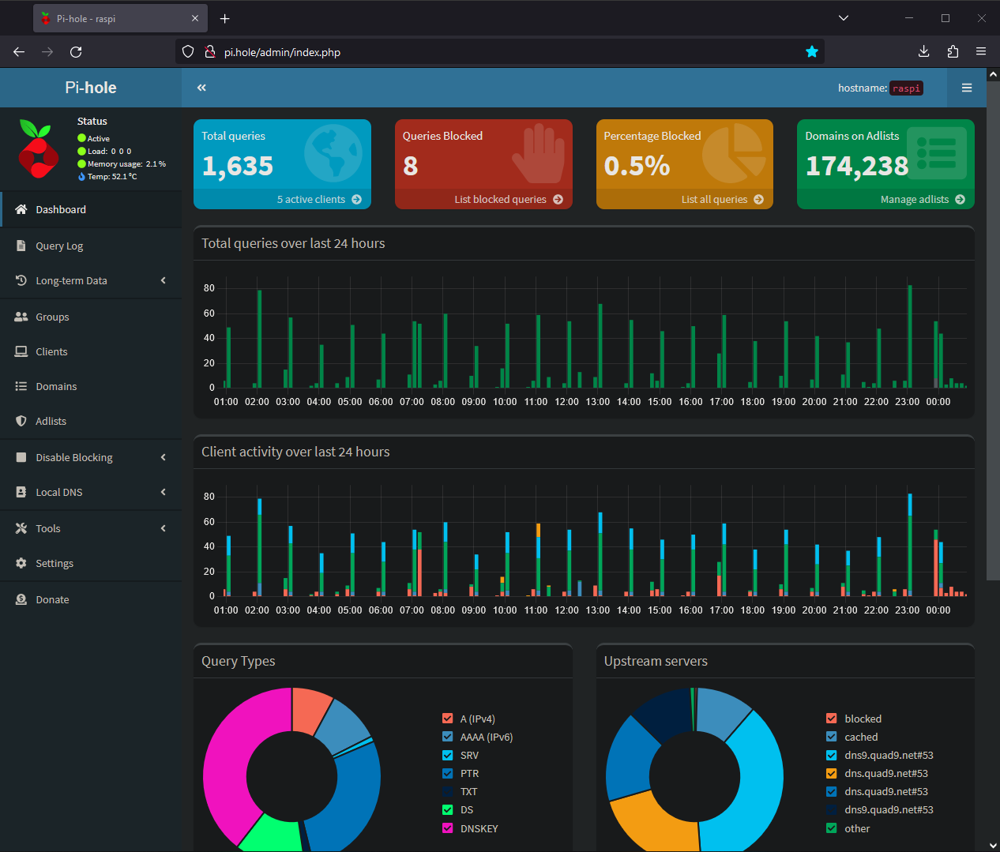
FwKnop
L’interface utilisateur sous Windows :

Ouverture et fermeture du port ssh par FwKnop dans iptables :

Il faut initier la connexion ssh pendant que le port est ouvert, FxKnop refermant le port automatiquement à la fin du timeout défini. Si la connexion est effective, elle le reste une fois le port refermé.
Lynis
Audit, renforcement des systèmes, tests de conformité
Lynis est un outil de s√©curit√© √©prouv√© pour les syst√®mes fonctionnant sous Linux, macOS ou Unix. Il effectue une analyse approfondie de l’√©tat de sant√© de vos syst√®mes afin de soutenir le durcissement du syst√®me et les tests de conformit√©. Le projet est un logiciel open source sous licence GPL, disponible depuis 2007.
Lynis en cours d’audit :

Résultat : 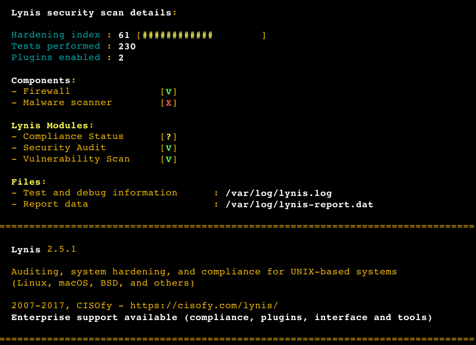
Apr√®s r√©solution de bon nombre d’avertissements en suivant les conseils prodigu√©s, l’indice de durcissement de ma machine sous Linux Bodhi 6 a atteint un score de 85.
Chapitre 2
Sécuriser les accès à Internet
1. Stage Cefim
Sous-sections de Sécuriser les accès à Internet
Exemple 1
Stage Cefim
Automatisation vouchers CEFIM_PEDAGO
Les vouchers sont des codes d’acc√®s temporaires √† un r√©seau WiFi s√©curis√©.
Mission initiale
Simplifier l’extraction de vouchers pour connexion au r√©seau WiFi CEFIM_PEDAGO des utilisateurs apportant leur propre mat√©riel (ordinateur, tablette, smartphone).
Contexte
Dans les locaux du CEFIM, le réseau WiFi CEFIM_PEDAGO est utilisé par la majorité des étudiants, formateurs, intervenants extérieurs et jurys.
L’acc√®s courant au r√©seau est autoris√© par un syst√®me de filtrage MAC au niveau du portail captif de la passerelle/pare-feu (pfSense). Les adresses MAC des machines CEFIM (pc/mac) fournies aux √©tudiants et formateurs internes sont enregistr√©es dans la configuration du portail captif.
Pour autoriser la connexion d’une machine inconnue du portail captif, un syst√®me d’authentification par vouchers est mis en place au niveau du portail captif. Il s’agit de s√©ries (appel√©es Rolls) de codes d’acc√®s temporaires g√©n√©r√©s manuellement dans l’interface web du pfSense (menu ‘Services’ > ‘Captive Portal’ > ‘Edit Zone’ > ‘Vouchers’).
En g√©n√©ral, une s√©rie de 1000 vouchers valides pendant cinq jours est g√©n√©r√©e par l’administrateur quand la s√©rie pr√©c√©dente arrive √† √©puisement. La s√©rie g√©n√©r√©e est t√©l√©charg√©e depuis l’interface web du pfSense au format .csv puis import√©e dans un google sheet partag√©.
Lorsqu’un groupe d’utilisateur a besoin de se connecter temporairement √† Internet avec des machines non connues du portail captif, il faut lui fournir une liste de vouchers (1 par personne). Pour cela, un op√©rateur doit renseigner les divers √©l√©ments du tableau (le statut r√©serv√©, son nom, la date et le nom du groupe ou de la personne) pour chaque voucher, puis copier le nombre de codes souhait√©s depuis le tableau partag√© et les coller dans un autre document (tableur ou texte) qu’il doit ensuite imprimer. L’utilisateur final peut ainsi se connecter au r√©seau en renseignant le voucher qui lui est ainsi fourni lorsque le portail captif lui demande.
Problèmes relevés
- Plusieurs manipulations sont nécessaires pour imprimer les vouchers.
- Les op√©rateurs n’utilisent pas toujours des codes contigus dans la liste, rendant parfois encore plus fastidieuses les extractions ult√©rieures.
- L’administrateur doit surveiller l’√©volution de l’utilisation de la liste de vouchers afin d’en g√©n√©rer de nouveau lorsqu’elle arrive √† √©puisement.
- Les vouchers sont le plus souvent attribu√©s √† des groupes d’utilisateurs. Une fois la formation termin√©e il n’y a aucun moyen de relier un utilisateur au code de connexion utilis√©, ce qui repr√©sente un risque l√©gal.
- Une partie des vouchers n’a pas √©t√© utilis√©e une fois la formation termin√©e, ce qui repr√©sente un autre risque car ces codes se retrouvent alors “dans la nature”.
Objectifs fonctionnels
- Simplifier et rationaliser le système.
- Avertir l’administrateur lorsque la liste de vouchers atteint un seuil critique.
- Relier les utilisateurs aux vouchers qu’ils ont utilis√©.
- Invalider les vouchers non utilisés.
Solution envisagée
D√©velopper un script ‘Apps Script’ (le langage de script Google Workspace - une version de javascript sp√©cifiquement d√©velopp√©e par Google) qui devra :
- Afficher un formulaire simplifiant la saisie des informations n√©cessaires √† l’extraction par les op√©rateurs.
- Extraire et réserver le nombre de vouchers nécessaires de la liste.
- Créer un Google Document présentant les vouchers mis en page, pret à être imprimé (mais éditable si besoin).
- Envoyer un email d’alerte √† l’administrateur lorsque la liste de vouchers disponibles arrive √† √©puisement.
Fonctionnalit√© suppl√©mentaire : Disposer d’une liste de secours afin de simplifier l’ajout de vouchers par l’admin s’il n’est pas pr√©sent sur site (en cong√©s, en d√©placement, etc.) lorsque la liste courante arrive √† √©puisement.
L’invalidation des vouchers non utilis√©s n’est possible que par l’interm√©diaire de l’interface web du pfSense et donc rel√®ve de la responsabilit√© de l’administrateur. Il faut simplement int√©grer cette op√©ration dans une proc√©dure de maintenance.
Prérequis
Arborescence Google Drive :
- 1 dossier principal Google Drive partagé avec :
- 1 sous-dossier accessible uniquement par l’administrateur.
- 1 sous-dossier partagé
Documents Google :
- 1 Google Sheet dans le dossier principal contenant la liste courante de vouchers disponibles. Le partage de ce fichier doit √™tre nominatif (l’acc√®s n√©cessite une connection aux services Google). Il contiendra :
- 1 feuille de calcul pour la liste des vouchers disponible.
- 1 feuille de calcul pour la liste des vouchers utilisés.
- 1 feuille de calcul masquée contenant les paramètres généraux des scripts :
- L’Id du mod√®le de document.
- L’Id du sous-dossier contenant les documents g√©n√©r√©s.
- L’adresse email de l’administrateur.
- Le seuil d’alerte.
- 1 modèle Google Document dans le dossier principal pour impression des vouchers sur demande contenant :
- Le logo du CEFIM.
- 1 emplacement pour le nom du groupe ou de la personne.
- 1 emplacement pour la date.
- 1 tableau sur 2 colonnes avec :
- 1 ligne de titres
- 25 lignes avec chacune 1 emplacement pour un voucher dans la 1√®re colonne et 1 cellule vide pour recevoir les nom et pr√©nom de l’utilisateur dans la 2√®me colonne.
- Un message “Bonne formation” sous le tableau.
- 1 Google Sheet dans le dossier privé contenant la liste des vouchers de secours.
Mise en oeuvre
Côté serveur
Un script serveur attaché à la liste courante qui implémente les fonctionnalités suivantes :
- Ajout d’un menu permettant d’afficher le formulaire de demande de vouchers.
- Ajout d’un d√©clencheur personnalis√© affichant le formulaire √† l’ouverture de la feuille de calcul.
- Le formulaire est affiché de manière modale.
- Post-traitement du formulaire :
- Récupération des données saisies.
- R√©cup√©ration de l’adresse email de l’op√©rateur.
- Extraction du nombre de vouchers demandés vers une autre feuille de calcul avec les infos de réservation.
- Mise en forme des données déplacées.
- Cr√©ation d’un Google Document √† partir d’un mod√®le.
- Insertions des données dans le Document.
- Suppression des éléments inutiles.
- enregistrement du Document dans un sous-dossier spécifique du Drive.
- Affichage du lien vers le Document généré.
- Envoie d’un email d’alerte √† l’administrateur lorsque le nombre de vouchers disponibles est en dessous du seuil d√©fini, avec :
- 1 lien vers l’interface web du pfSense pour g√©n√©rer un nouveau roll.
- 1 lien pour ouvrir la liste de secours.
- 1 lien vers la liste courante.
Un script serveur attaché à la liste de secours qui implémente ces fonctionnalités :
- Ajout d’un menu permettant de lancer la proc√©dure d’ajout de vouchers de secours √† la liste courante.
- Le chargement de la configuration contenue dans une feuille spécifique du classeur.
- La proc√©dure d’ajout de vouchers de secours √† la liste courante avec demande de confirmation pr√©alable et gestion des erreurs (authentification, ouverture de fichier).
- Envoi d’un email indiquant le succ√®s ou l’√©chec √©ventuel de l’op√©ration et indiquant le nombre de vouchers de secours restants.
Coté client
Un fichier html contenant le formulaire de réservation de vouchers avec :
- 1 champ pour renseigner le nom du ou des destinataires (groupe ou personne).
- 1 champ pour la date.
- 1 champ pour le nombre de vouchers à réserver.
- Formatage CSS :
- Mise en page générale.
- Indication des champs requis.
- Javascript :
- Validation des données saisies pour éviter les erreurs, avec retour visuel.
- Indication de chargement.
- Déclenchement du script serveur suite à la validation du formulaire.
Un fichier Html d’indication de chargement comportant :
- 1 titre
- 1 gif animé hébergé sur le Google Drive partagé
Utilisation
Par les opérateurs
√Ä l’ouverture du Google Sheet partag√© contenant la liste des vouchers disponibles, un script est automatiquement ex√©cut√©. Il ajoute une entr√©e de menu et affiche le formulaire permettant de saisir les informations n√©cessaires √† la r√©servation de vouchers :
- Un nom de groupe ou personne.
- La date de début de formation.
- Le nombre de vouchers à réserver.
L’op√©rateur √©tant connect√© pour avoir acc√®s au document, son adresse email est automatiquement r√©cup√©r√©e par le script.
Une fois le formulaire correctement renseigné (les données saisies sont vérifiées) le script déplace le nombre de vouchers réservés dans une autre feuille où sont également renseignés les informations propres à la réservation, puis génère une copie du modèle Google Document en y insérant le nom du groupe, la date et la liste de vouchers réservés.
Une boite de dialogue affichant le lien vers le document g√©n√©r√© est alors pr√©sent√©e √† l’op√©rateur. En suivant ce lien le document s’ouvre dans un nouvel onglet de son navigateur, il peut directement l’imprimer ou le modifier au pr√©alable si besoin (par ex. : renseigner la colonne des noms d’utilisateurs si connus par l’op√©rateur). Si non remplis avant impression, les utilisateurs devront renseigner leur nom et pr√©nom en regard du voucher utilis√©.
Une fois le tableau rempli et r√©cup√©r√©, l’op√©rateur devra reporter ces renseignements dans le tableau des vouchers utilis√©s. Pour se conformer √† la l√©gislation, ces donn√©es devront √™tre conserv√©es pendant une dur√©e minimum d'1 an.
Par l’administrateur
L’administrateur g√©n√®re un roll initial de 1000 vouchers ayants une dur√©e de validit√© de 5 jours.
Lorsque le nombre de vouchers disponible atteint le seuil minimal, il re√ßoit un email d’alerte lui indiquant le nombre de vouchers disponibles restant et lui pr√©sentant :
- Un lien vers l’interface web du pfSense (adresse ip publique accessible de l’ext√©rieur).
- Un lien vers le Google Sheet contenant les vouchers de secours pour un ajout rapide.
- Un lien vers la liste courante pour vérification.
S’il d√©cide d’activer des vouchers de secours, un menu ou un bouton lui permettent d’ajouter 100 vouchers de secours √† la liste courante. Il peut r√©p√©ter l’op√©ration jusqu’√† √©puisement de la liste de secours. Un email de confirmation (ou d’erreur) lui est automatiquement envoy√© √† chaque ajout lui indiquant le succ√®s (ou l’√©chec le cas √©ch√©ant) de l’op√©ration ainsi que le nombre de vouchers de secours restants.
Ensuite, lorsque son emploi du temps lui permettra, il devra g√©n√©rer un nouveau roll de vouchers par le biais de l’interface web du pfSense et les ajouter √† la liste courante. Il devra √©galement s’assurer de disposer d’un nombre suffisant de vouchers de secours en cas de besoin.
Mise en production
Le document Google Sheet contenant la liste courante de voucher doit √™tre stock√© dans un dossier principal Google Drive (‘CEFIM_PEDAGO’). Ce document doit √™tre partag√© nominativement (utiliser le partage “Limit√©”) en renseignant une adresse email pour chaque collaborateur devant avoir un acc√®s √† cette liste. Ceci est n√©cessaire pour pouvoir r√©cup√©rer automatiquement son adresse email via le script. Ce document comportera 3 feuilles de calcul :
- 1 feuille nomm√©e “Vouchers” contenant la liste des vouchers disponibles.
- 1 feuille nomm√©e “Utilis√©s” contenant la liste des vouchers r√©serv√©s.
- 1 feuille nomm√©e “Config” (masqu√©e) contenant les param√®tres des scripts.
Le mod√®le Google Document sera h√©berg√© dans le dossier principal avec la liste courante et pourra √™tre partag√© de mani√®re plus permissive (option de partage “Tous les utilisateurs qui ont le lien”).
Le document Google Sheet contenant les vouchers de secours doit √™tre, quant-√†-lui, stock√© dans un sous dossier priv√© (‘PRIVATE’) du dossier principal et n’√™tre accessible que par l’administrateur en charge de la g√©n√©ration des rolls de vouchers (d√©tenant un acc√®s au pfSense). Il ne comportera qu’une seule feuille nomm√©e “Liste_Secours”.
Important : Bien respecter les noms des feuilles de calcul pour les 2 Google Sheet tels qu’indiqu√©s ci-dessus en gras : Les scripts s’appuient sur ces noms de feuille.
Partages
- Dossier principal ‘CEFIM_PEDAGO’ : Tous les utilisateurs qui ont le lien
- Sous-dossier ‘DOCS’ : Tous les utilisateurs qui ont le lien
- Sous-dossier ‘PRIVATE’ : Non partag√©
- Google Sheet ‘Vouchers_CEFIM_PEDAGO’ : Partage limit√©
- Google Document ‘Template_Vouchers_CEFIM_PEAGO’ : Tous les utilisateurs qui ont le lien
- Google Sheet ‘Vouchers_CEFIM_PEDAGO_SECOURS’ : Non partag√©
Améliorations ultérieures éventuelles
-
Création et gestions de plusieurs rolls avec des durées de validité différentes (1/2 journée - 1 jour - 2 jours - 3 jours - 4 jours - 1 semaine - 2 semaines - 1 mois) pour correspondre aux durées des différentes formations dispensées. Autant de rolls de secours devront être prévus.
-
Dans le cas o√π l’op√©rateur renseigne les noms/pr√©noms des utilisateurs avant impression, disposer d’un script attach√© au document permettant de reporter automatiquement ces infos dans le tableau des vouchers utilis√©s.
-
Export des vouchers r√©serv√©s √† l’issue de chaque formation afin d’en faciliter la v√©rification (s’ils ont √©t√© utilis√©s ou non) ou l’invalidation (interface web du pfSense dans les 2 cas).
Annexes
Caractéristiques des rolls de vouchers
- Ils comportent un numéro unique parmi les rolls actifs.
- On leur affecte un nombre de vouchers (1023 maximum avec le nombre de bits de ticket par défaut).
- On leur défini une durée de validité en heures.
- Une description leur est associée.
Attention : Tout changement dans les champs de nombre de bits (roll, ticket ou somme de contrôle - voir ci-après) invalide immédiatement tout roll créé précédemment.
Caractéristiques générales des vouchers pfSense
Le texte en italique ci-dessous est une traduction de la documentation officielle.
- Clés RSA :
64 bits maximum(32 bits par défaut). - Jeu de caractères (utilisé pour la création des vouchers) :
2345678abcdefhijkmnpqrstuvwxyzABCDEFGHJKLMNPQRSTUVWXYZ(par défaut - les caractères pouvant prêter à confusion sont retirés).
Bits des vouchers : Les champs de bits suivants contr√¥lent la mani√®re dont les vouchers sont g√©n√©r√© par le portail. Il est recommand√© d’utiliser les valeurs par d√©faut mais celles-ci peuvent √™tre ajust√©es si n√©cessaire. Le total de tous les champs de bits doit √™tre inf√©rieur au nombre de bits de la cl√© RSA (exemple avec les valeurs par d√©faut : 16 + 10 + 5 = 31 => 32 - 1).
- Bits de roll : [1-31], défaut :
16=> définit le nombre maximum de rolls actifs simultanément = 65535 avec 16 bits (2^16 - 1, défaut). - Bits de ticket : [1-16], défaut :
10=> définit le nombre maximum de vouchers par roll = 1023 avec 10 bits (2^10 - 1, défaut). - Bits de somme de contrôle : [0-31], défaut :
5=> bits de contr√¥le d’int√©grit√©.
Le ’nombre magique’ est pr√©sent dans chaque voucher et est v√©rifi√© par le portail lors de la v√©rification du voucher. La taille du nombre magique d√©pend du nombre de bits restant apr√®s avoir additionn√© les bits de roll, voucher et somme de contr√¥le. S’il ne reste aucun bit disponible, le nombre magique n’est pas utilis√©.
Les deux derniers champs de la page de configuration permettent de personnaliser les messages d’erreur en cas de tentative de connexion avec un code invalide ou avec un code expir√©.
En r√©sum√© : Pour augmenter le nombre maximum de vouchers g√©n√©r√©s par roll il faut augmenter le nombre de bits de ticket tout en diminuant d’autant le nombre de bits de roll (en cons√©quence les vouchers g√©n√©r√©s comporteront davantage de caract√®res).
Caractéristiques des vouchers pour CEFIM_PEDAGO
- Générés par roll de 1000 vouchers.
- Dur√©e de validit√© de 5 jours √† compter du moment d’activation par l’utilisateur.
Les options suivantes conservent les valeurs par défaut :
- Clés RSA de 32 Bit (Public/Private).
- Jeu de caractères : 2345678abcdefhijkmnpqrstuvwxyzABCDEFGHJKLMNPQRSTUVWXYZ
- Bits de roll : 16
- Bits de tickets : 10
- Bits de somme de contrôle : 5
- Nombre magique à 10 chiffres.
Captures d’√©crans
- Le formulaire de réservation :

- Le modèle de document :

- La présentation du lien vers le document généré :

- Le document généré :

- Le document généré modifié :

- L’email d’alerte de liste √©puis√©e :

- L’email de confirmation d’activation de vouchers de secours :

Code
Vouchers CEFIM_PEDAGO
Code.gs :
// Global config object
let config = {};
// Add a menu entry to UI
function onOpen() {
SpreadsheetApp.getUi()
.createMenu('üîëVOUCHERS')
.addItem('Reserver', 'openFormDialog')
.addToUi();
}
// Open the form dialog (triggered by opening the spreadsheet or by the VOUCHERS menu)
function openFormDialog() {
let sheet = SpreadsheetApp.getActive().getSheetByName('Vouchers');
sheet.activate();
let html = HtmlService.createHtmlOutputFromFile('Form')
.setWidth(520)
.setHeight(320);
SpreadsheetApp.getUi()
.showModalDialog(html, 'Vouchers CEFIM_PEDAGO');
}
// Show the loading dialog
function openLoadingModal() {
let html = HtmlService.createHtmlOutputFromFile('Loading')
.setWidth(520)
.setHeight(360);
SpreadsheetApp.getUi()
.showModalDialog(html, 'Chargement...');
}
// Populate the config object
function getConfig() {
let configSheet = SpreadsheetApp.getActive().getSheetByName('Config');
config.templateId = configSheet.getRange(2, 2).getValue();
config.docFolderId = configSheet.getRange(3, 2).getValue();
config.email = configSheet.getRange(4, 2).getValue();
config.lowlimit = parseInt(configSheet.getRange(5, 2).getValue(), 10);
Logger.log(`*CONFIG* templateId: ${config.templateId}
docFolderId: ${config.docFolderId}
email: ${config.email}
lowlimit: ${config.lowLimit}`);
}
// Create a Google Document with form response data
function createDocumentFromFormData(form) {
config = getConfig();
let html = '';
let ui = null;
// Form response (or test data if debugging)
let grp = form.group ? form.group : 'DEBUG TEST GRP [' + new Date() + ']';
let date = form.date ? form.date : '2022-12-31';
let nb = form.nb ? parseInt(form.nb, 10) : 2;
// Localized date
let fdate = Utilities.formatDate(new Date(date), 'Europe/Paris', 'dd/MM/yyyy');
// Get email of the user executing the script
let user = Session.getActiveUser().getEmail();
let ss = SpreadsheetApp.getActive();
// Store the working Sheets
let vlist = ss.getSheetByName('Vouchers');
let used = ss.getSheetByName('Utilisés');
let rows = vlist.getDataRange().getValues();
// Make a copy of the template Document & store its ID
let documentId = DriveApp.getFileById(config.templateId).makeCopy().getId();
// Using string interpolation
let title = `${date} - ${grp} - ${Date.now()}`;
let docFile = DriveApp.getFileById(documentId)
docFile.setName(title);
// Add the docFile to the doc sub-folder
DriveApp.getFolderById(config.docFolderId).addFile(docFile);
// Remove the docFile ref from the current folder
docFile.getParents().next().removeFile(docFile);
let documentUrl = `https://docs.google.com/document/d/${documentId}/edit`;
let docBody = DocumentApp.openById(documentId).getBody();
docBody.replaceText('##Groupe##', grp);
docBody.replaceText('##Date##', fdate);
let placeholder = '';
// Store the 1st empty row from the used Sheet before insertion
let firstRow = used.getLastRow() + 1;
// Get & move the needed number of Vouchers from the vlist Sheet to the used Sheet,
// starting from the end of the list (one by one to timestamp each of them)
for (let i = rows.length, j = 1, row; i >= 2 && j <= nb; i--, j++) {
row = rows[i - 1];
vlist.deleteRow(i);
placeholder = `##voucher${j}##`;
// row[0] is the voucher
docBody.replaceText(placeholder, row[0]);
// add the timestamp
row[1] = Utilities.formatDate(new Date(), 'Europe/Paris', 'yyyy/MM/dd HH:mm:ss.SSS');
row[2] = '';
// Following data need to be written 1 time only
if (j === 1) {
row[3] = fdate;
row[4] = user;
row[5] = grp;
row[6] = documentUrl;
}
// Append the row to the used list
used.appendRow(row);
}
// Count remaining vouchers en send an alert if <= config.lowlimit
rows = vlist.getDataRange().getValues();
let vouchersLeft = rows.length - 1;
if (vouchersLeft <= config.lowlimit) {sendAlertEmail(vouchersLeft);}
// Format inserted data inside the used Sheet (merge - valign - borders - columns auto resize)
let lastRow = used.getLastRow();
let range = `D${firstRow}:G${lastRow}`;
// merge & align
used.getRange(range).mergeVertically().setVerticalAlignment('middle').setHorizontalAlignment('center');
range = `A${firstRow}:G${lastRow}`;
// borders
used.getRange(range).setBorder(true, true, true, true, null, null);
// autoresize colums
used.autoResizeColumns(1, 7);
// Delete unused placeholders in the Document
for (let i = nb + 1; i <= 25; i++) {
placeholder = `##voucher${i}##`;
docBody.replaceText(placeholder, '');
}
let search = null;
let tables = [];
// Extract all the tables inside the Document
while (search = docBody.findElement(DocumentApp.ElementType.TABLE, search)) {
tables.push(search.getElement().asTable());
}
// Delete all empty rows from the Document tables
tables.forEach(function (table) {
let trows = table.getNumRows();
// Iterate through each row of the table
for (let r = trows - 1; r >= 0; r--) {
// If the table row contains no text, delete it
if (table.getRow(r).getText().replace(/\s/g, '') === '') {
table.removeRow(r);
}
}
});
// Show the ready to print Document link in a modal dialog
SpreadsheetApp.getActive().toast(`${nb} vouchers réservés pour le groupe ${grp} pour le ${fdate} par ${user}`);
html = '<html><head><style>* {font-family: "Google Sans",Roboto,RobotoDraft,Helvetica,Arial,sans-serif;}</style></head>'
+ '<body><h1><a href="' + documentUrl + '" target="_blank">Ouvrir le document</a></h1>'
+ '<h3>Une fois ouvert, le document peut être modifié et/ou imprimé.</h3>'
+ '<p>Le lien du document est également accessible via la feuille "Utilisés".</p>'
+ '<div style="margin: 80px auto auto 200px;">'
+ '<input type="button" value="Fermer" id="btnclose" onclick="google.script.host.close();" style=" width: 80px; height: 30px;" /></div>'
+ '</body></html>';
ui = HtmlService.createHtmlOutput(html);
SpreadsheetApp.getUi().showModalDialog(ui, title);
}
function sendAlertEmail(nbleft) {
Logger.log(`sendAlertEmail a démarré avec le paramètre nbleft=${nbleft}`);
let subject = 'Alerte CEFIM_PEDAGO Vouchers : Liste épuisée';
let body = '<html><body><h1 style="color: red;">La liste de vouchers CEFIM_PEDAGO disponibles arrive à épuisement.</h1>'
+ '<h2>Il reste <b>' + nbleft + ' vouchers disponibles</b> dans la liste courante.</h2>'
+ '<h3><p>Options :</p>'
+ '<ul><li><a href="https://46.247.250.13:666//" target="_blank">'
+ 'Se connecter à l\'inteface web du pfSense CEFIM_PEDAGO afin de générer un nouveau Roll</a></li>'
+ '<li><a href="https://docs.google.com/spreadsheets/d/12vdKWwv6jeDFzN9X8V79do9gQrcitEgQPXLvzj6H91w" target="_blank">'
+ 'Ouvrir la liste de secours pour ajout rapide de vouchers</a></li>'
+ '<li><a href="https://docs.google.com/spreadsheets/d/16eqNvG-Z5y9pHuQbCb80A3K3q3gIcX9S6Ja_7TwtFZ0/edit#gid=1505767989" target="_blank">'
+ 'Ouvrir la liste régulière pour vérifications</a></li></ul></h3></body></html>';
MailApp.sendEmail({
to:config.email,
subject:subject,
htmlBody:body,
name:'CEFIM_PEDAGO - Vouchers alerte'
});
}
Form.html :
<!DOCTYPE html>
<html>
<head>
<base target="_top">
<style>
* {font-family: "Google Sans",Roboto,RobotoDraft,Helvetica,Arial,sans-serif;}
#info {font-size: 14px; color: red; margin-bottom: 10px;}
p {font-weight: 600;}
label {display: inline-block; width: 210px;}
label::after {content: " *"; color: red;}
input {display: inline-block; width: 260px; color: blue;}
#date {width: 120px;}
#nb {width: 40px;}
.sep {font-size: 10px;}
.msg {display: none; color: red; font-size: 10px; margin-left: 110px;}
#btnsubmit, #btncancel {width: 210px; margin: 0 12px 0 12px; padding: 5px 0;}
#loading {display: none;}
#loadtxt {position: absolute; top: 2px; left: 2px;}
#loadimg {position: relative;}
</style>
</head>
<body>
<div id="form">
<p>Les vouchers CEFIM_PEDAGO sont valides 5 jours</p>
<hr />
<div id="info">* Requis</div>
<form id="resaForm">
<label for="grp">Nom ou Groupe</label>
<input type="text" id="grp" name="group" />
<div id="badgrp" class="msg">
<p>Indiquer un nom de personne ou de groupe</p>
</div>
<div id="sepgrp" class="sep"><p> </p></div>
<label for="date">Date</label>
<input type="date" id="date" name="date" />
<div id="baddate" class="msg">
<p>Choisir une date</p>
</div>
<div id="sepdate" class="sep"><p> </p></div>
<label for="nb">Nombre de vouchers (1-25)</label>
<input type="number" min="1" max="25" id="nb" name="nb" />
<div id="badnb" class="msg">
<p>Choisir un nombre entre 1 et 25</p>
</div>
<div id="sepnb" class="sep"><p> </p></div>
<hr /><br />
<input type="button" value="Annuler" id="btncancel"
onclick="google.script.host.close();" />
<input type="button" value="Valider" id="btnsubmit"
onclick="submitForm();" />
</form>
</div>
<script>
window.onload = function() {
  document.getElementById("grp").focus();
}
// Called right after the form is submited
function submitForm() {
let err = 0;
let grp = document.getElementById("grp").value;
if (grp === "") {
document.getElementById("badgrp").style.display = "block";
document.getElementById("sepgrp").style.display = "none";
err += 1;
} else {
document.getElementById("badgrp").style.display = "none";
document.getElementById("sepgrp").style.display = "block";
}
let dat = document.getElementById("date").value;
if (dat === "") {
document.getElementById("baddate").style.display = "block";
document.getElementById("sepdate").style.display = "none";
err += 1;
} else {
document.getElementById("baddate").style.display = "none";
document.getElementById("sepdate").style.display = "block";
}
let num = document.getElementById("nb").value;
if ((num < 1) || (num > 25)) {
document.getElementById("badnb").style.display = "block";
document.getElementById("sepnb").style.display = "none";
err += 1;
} else {
document.getElementById("badnb").style.display = "none";
document.getElementById("sepnb").style.display = "block";
}
if (err > 0) {return;}
google.script.run
.openLoadingModal();
google.script.run
.withSuccessHandler(onSubmitSuccess)
.createDocumentFromFormData(document.getElementById("resaForm"));
}
// Called when the form is successfully submited - google.script.run is asynchronous
function onSubmitSuccess(/*serverFunctionOutput, userObj*/) {
google.script.run
.withSuccessHandler(onLoadSuccess)
.openLoadingModal();
}
// Called when the process is finished
function onLoadSuccess() {
google.script.host.close();
}
</script>
</body>
</html>
Loading.html :
<!DOCTYPE html>
<html>
<head>
<base target="_top">
<style>
* {font-family: "Google Sans",Roboto,RobotoDraft,Helvetica,Arial,sans-serif;}
img {
display: block;
margin-left: auto;
margin-right: auto;
width: 90%;
}
h2 {
position: absolute;
top: 2px;
left: 50px;
}
</style>
</head>
<body>
<div id="loading">
<img id="loadimg" src="https://lh3.googleusercontent.com/M7YzZMHlX9FO4tQC_o3FbCHXzA1GpYKSmP1h-w0EeGR40CNppuVzEkNZio8lRI9ZwLM=w2400" title="Loading..." style="" />
<h2 id="loadtxt">Patientez svp</h2>
</div>
</body>
</html>
Chapitre 3
Maintenir et exploiter un serveur Linux
1. Serveur LAMPS
Sous-sections de Maintenir et exploiter un serveur Linux
Exemple 3
Serveur LAMPS
Serveur LAMPS avec MediaWiki
 Ici, nous installerons MediaWiki en lieu et place de Wordpress
Ici, nous installerons MediaWiki en lieu et place de Wordpress
1 - Préambule
Avoir une machine debian 11 en ip fixe avec :
- une connexion ssh
- .bashrc configuré
- (ssh) nmap zip dnsutils net-tools tzdata lynx sudo curl git screen locate ncdu
- la derni√®re version de webmin (finir l’installation avec apt -f install)
- winbind samba
Configurer :
- resolv.conf
- hosts
- hostname
- nsswitch
- timezone (dpkg-reconfigure tzdata)
Sur Windows : ajouter AdresseIp[TAB]fqdn dans le fichier C:\Windows\System32\drivers\etc\hosts de Windows en Administrateur
dans mon cas :
92.168.0.200 wiki.infra.lan
Attention
Choisir des mots de passe forts si utilisation en production.
2 - APACHE 2
installation et configuration d’apache 2.4
apt install apache2
- activation du module SSL
a2enmod ssl
- activation du site SSL
a2ensite default-ssl
- relancer le service (systemctl restart apache2)
service apache2 restart
- génération du certificat auto signé pour 10 ans
openssl req $@ -new -x509 -days 3650 -nodes -out /etc/apache2/apache.pem -keyout /etc/apache2/apache.pem

- activation des modules populaires
a2enmod rewrite
a2enmod headers
- écriture du nouveau certificat ssl dans la conf apache et changement du documentroot et redirection

cd /etc/apache2/sites-available/
nano default-ssl.conf
- nettoyage et redirection
(pour une meilleure lisibilité, on peut retirer les commentaires de 000-default.conf et default-ssl.conf)
nano /etc/apache2/sites-available/000-default.conf
<VirtualHost *:80>
Redirect Permanent / https://wiki.infra.lan
</VirtualHost>

- redémarrer le serveur apache
service apache2 restart
- commenter la section <Directory /var/www/html>… de apache2.conf
nano /etc/apache2/apache2.conf

-
création en mode user du dossier wiki et d’un index dans /home/user/
-
débrayage temporaire en mode user pour la création
su user
mkdir /home/user/wiki
- créer du contenu dans index.html
nano /home/user/wiki/index.html
- repasser en root
su -
ou
exit
- changement r√©cursif de propri√©taire et c’est apache le nouveau proprio
chown -R www-data:www-data /home/user/wiki
- ajout de user au groupe www-data
usermod -aG www-data user
- changement récursif des droits pour le dossier wiki pour ftp et samba
chmod -R 775 /home/user/wiki
service apache2 restart
- fusion des 2 fichiers de conf
- copier le contenu des 2 fichiers de conf (000 et default ssl) dans un seul fichier dans sites-available nommé site.conf
cd /etc/apache2/sites-available
cat 000-default.conf > site.conf
cat default-ssl.conf >> site.conf
- désactivation des 2 fichiers de conf qui ne vont plus servir
a2dissite 000-default
a2dissite default-ssl
- effacement de ces 2 fichiers
rm 000-default.conf
rm default-ssl.conf
- activation de la nouvelle et unique conf
a2ensite site.conf
- ajout de la section <Directory… dans site.conf qui doit maintenant ressembler √† √ßa :

service apache2 restart
√† ce stade la page html doit s’afficher dans le navigateur de Windows √† l’adresse https://wiki.infra.lan

3 - MySQL
Installation et configuration de MySQL
- installation de mysql8 en lieu et place de maria
wget https://repo.mysql.com/mysql-apt-config_0.8.23-1_all.deb
dpkg -i mysql-apt-config_0.8.23-1_all.deb
S√©lectionner ‘MySQL Server & Cluster…’ + [entr√©e]

S√©lectionner ‘mysql-8.0’ + [entr√©e]

S√©lectionner ‘Ok’ dans la liste + [entr√©e]

apt update
apt upgrade
apt install mysql-server
- indiquer le mot de passe pour l’acc√®s √† mysql en root et confimer √† l’√©cran suivant

choisir l’option recommand√©e (strong password encryption) + [entr√©e]

- test de mysql en CLI
mysql -u root -p
puis entrer le mot de passe choisi juste avant

exit pour sortir
4 - PHP
Installation et configuration du langage PHP 7.x
- installation PHP 7.4 sur deb 11
apt install php
- édition du fichier php.ini pour modifier le upload max filesize
nano /etc/php/7.4/apache2/php.ini
pour faire une recherche dans nano : tapper ctrl+w et entrer le texte à rechercher (upload_max) puis entrée

- redémarrer le service apache2
service apache2 restart
création d’un fichier info dans /home/user/wiki/ nommé info.php avec le compte user
su user
nano /home/user/wiki/info.php

- repasser en root
su -
ou
exit
- lancer un navigateur sur https://wiki.infra.lan/info.php

installation des libs PHP souvent utilisées par les cms
apt install php-curl php-gd php-zip php-apcu php-xml php-ldap php-mbstring
apt install php-mysql
- recharger apache2
service apache2 restart
5 - PhpMyAdmin
Installation et configuration de PhpMyAdmin
- installation de PhpMyAdmin
apt install phpmyadmin
ATTENTION : √† la page de s√©lection du serveur web, appuyer sur [espace] pour s√©lectionner ‘apache2’ avant de valider :

répondre OUI pour utiliser dbconfig-common
entrer un mot de passe pour PhpMyAdmin dans mysql et confirmer √† l’√©cran suivant
entrer un mot de passe pour l’administrateur de PhpMyAdmin
- et voir ce lien pour l’alias (pour acc√©der √† PhpMyAdmin via pma) =>
nano /etc/phpmyadmin/apache.conf

- recharger apache2
service apache2 restart
Changement des droits root avec %
-
se connecter en root sur phpmyadmin sur un navigateur √† l’url https://wiki.infra.lan/pma
-
dans le cadre de gauche, d√©plier l’entr√©e mysql et s√©lectioner la table ‘user’
-
dans la ligne ‘root’ du cadre principal, entrer % √† la place de localhost

Cr√©ation via PMA dans MYSQL d’un utilisateur ‘user’ qui aura tous les droits sur la base ‘user’ mais pas ailleurs
- aller √† l’accueil de pma

- cliquer sur l’onglet ‘Comptes utilisateurs’ puis le lien ‘Ajouter un compte utilisateur’

- saisir le nom d’utilisateur et son mot de passe + confirmation puis activer la case √† cocher ‘Cr√©er une base portant son nom…’ et rien d’autre. Cliquer le bouton ‘Ex√©cuter’ tout en bas √† droite de la page.

- Recharger les privileges (droits) via la zone de texte de l’onglet SQL en saisissant la commande :
FLUSH PRIVILEGES;
- Se déconnecter en haut à gauche et tester les droits du nouvel utilisateur
6 - FTP
Installation et configuration du service FTP
- installation du service ftp
apt install vsftpd
- copie de sauvegarde de /etc/vsftpd.conf avant édition
mv /etc/vsftpd.conf /etc/vsftpd.bak
- configuration du service avec chrootage, passv et ssl
nano /etc/vsftpd.conf
Un exemple de fichier vsftpd.conf (ici renommé en .txt pour en faciliter la lecture)
service vsftpd restart
nmap 127.0.0.1
nmap votre_ip
service vsftpd status
- se connecter en sftp avec filezilla client

7 - SAMBA
Installation et configuration du partage SAMBA
- config de samba (samba pré-installé en amont)
cp /etc/samba/smb.conf /etc/samba/smb.bak
nano /etc/samba/smb.conf

- relancer les 2 services
service nmbd restart
service smbd restart
- tester notre fichier de conf
testparm
- chiffrer le user de la base de compte local Linux à la sauce windows
smbpasswd -a user
il n’ y a plus qu’√† tester via l’explorateur de fichier avec

8 - Script de sauvegarde des bases de donneÃÅes
Le but est de creÃÅer une taÃÇche automatique qui compresse en zip le dossier contenant les bases et qui le sauve dans un dossier aÃÄ la date du jour ainsi que le contenu du dossier wiki
- on crée le script dans /root
cd /root
touch backup.sh
- on lui donne les droits d’ex√©cution
chmod +x backup.sh
- on l’√©dite
nano backup.sh
avec :
#!/bin/bash
#Scipt de backup auto de la BDD et du wiki pour le site user
#V1.0 par UserName le Date
clear
echo Compression des fichiers...
7zip -rq /home/user/$(date +%Y%m%d%H%M%S)_wiki_backup-fichiers.zip /home/user/wiki
echo Dump de la base de données...
mysqldump -u root -p 'toor' --databases user > /home/user/_wiki_backup-base.sql
echo Compression de la base de données...
zip -q /home/user/$(date +%Y%m%d%H%M%S)_wiki_backup-base.zip /home/user/_wiki_backup-base.sql
rm /home/user/_wiki_backup-base.sql
echo Terminé !
(La chaine ’toor’ est le mot de passe de root sur mysql. Choisir un MDP fort pour un usage en production)
Pour tester le script
cd /root
./backup.sh
ou plus simplement
/root/backup.sh
Pour automatiser ce script :
crontab -e
- choisir [1] pour ouverture avec nano
rajouter la ligne (cf http://crontab.guru)
*/5 * * * * /root/backup.sh
- cette directive exécute le script toutes les 5 minutes
9 - Installation du certificat dans Webmin
Dans un navigateur, acc√©der √† l’url : https://wiki.infra.lan:10000 et se connercter avec root
Puis dans Webmin > Webmin Configuration > SSL encryption (version en) :

Appliquer les changements en cliquant le bouton ‘Save’ en bas √† gauche de la page ; attendre quelques secondes puis recharger la page.
10 - MediaWiki
installation de MediaWiki
- installation de l’extention PHP intl (requise pour MediaWiki)
apt install php-intl
service apache2 restart
- installation de MediaWiki
cd /home/user
wget https://releases.wikimedia.org/mediawiki/1.38/mediawiki-1.38.2.zip
unzip mediawiki-1.38.2.zip
rm -R wiki
mv mediawiki-1.38.2 wiki
chown -R www-data:www-data /home/user/wiki
chmod -R 775 /home/user/wiki
Terminer l’installation de MediaWiki via le navigateur
-
Dans le navigateur, aller à https://wiki.infra.lan
-
cliquer sur le lien propos√© pour d√©marrer l’installation
-
√† la page ‘Connexion √† la base de donn√©es’, choisir :
- Type de base de données : MariaDB, MySQL , ou compatible
- Nom d’hôte de la base de données : localhost
- Nom de la base de données (sans tirets) : user
- Préfixe des tables de la base de données (sans tirets) : mw_
- Nom d’utilisateur de la base de données : user
- Mot de passe de la base de données : le mot de passe pour user défini plus haut dans PhpMyAdmin
-
√† la page ‘Nom’, nommer le wiki (ie : wiki infra.lan) ; c’est le nom qui figurera dans la barre de titre du navigateur ; puis renseigner un utilisateur qui sera administrateur du wiki (MDP 10 caract√®res minimum)
-
On peut s’arr√™ter l√† pour cet exemple. Il est n√©anmoins possible de sp√©cifier des greffons suppl√©mentaires en poursuivant l’installation.
-
Un fichier (LocalSettings.php) est g√©n√©r√© et t√©l√©charg√© par le navigateur. Il doit √™tre copi√© √† la racine wiki (dossier /home/user/wiki) avec Filezilla ou Samba. Si probl√®me d’√©criture dans le dossier wiki, ressaisir les 3 commandes chown, usermod et chmod de la section apache telles que d√©crites au d√©but de ce document.
chown -R www-data:www-data /home/user/wiki
usermod -a -G www-data user
chmod -R 775 /home/user/wiki
Le wiki est opérationnel sur https://wiki.infra.lan
On peut consulter la base de donn√©e en se connectant avec user √† PhpMyAdmin sur https://wiki.infra.lan/pma : l’installation de MediaWiki a g√©n√©r√© 58 tables.
Chapitre 4
Maintenir et exploiter un environnement virtualisé
1. TP Infra
Sous-sections de Maintenir et exploiter un environnement virtualisé
Exemple 4
TP Infra
TP infra en cluster ESXi
Voici les schémas réseaux du TP infra dirigé par Karl Fricker
| CHECKLIST | |
|---|---|
| ROUTEUR /GTW | |
| Installation d’un PFSense | VRAI |
| Configuration du WAN | VRAI |
| Configuration du LAN en classe B/24 | VRAI |
| Définir les interfaces optionnelles pour chaque VLAN | VRAI |
| Les clients derrière le routeur ont internet | VRAI |
| Configuration de l’acc√®s en https only sur le port 666 | VRAI |
| L’√©quipement est pinguable via un FQDN pertinent ou son alias | VRAI |
| Définir un SSID petinent avec une shared key WPA2 | VRAI |
| L’√©quipement est pinguable via un FQDN pertinent ou son alias | VRAI |
| S√©curiser l’√©quipement | VRAI |
| ESXi | |
| Installation d’un ESXi 7 sur une machine h√¥te physique | VRAI |
| 1 datastore local est configuré | VRAI |
| A minima deux cartes réseaux sont configurées | VRAI |
| Les VMS ne passent pas toutes par la même IF | VRAI |
| L"ESXI peut s’authentifier sur le LDAP de DC1 | FAUX |
| L’√©quipement est pinguable via un FQDN pertinent ou son alias | VRAI |
| DC1 | |
| un domaine du type toto.lan a été crée | VRAI |
| la zone reverse est crée | VRAI |
| Les roots servers DNS sont à jour | VRAI |
| Un redirecteur vers 1.1.1.1 est créé | VRAI |
| 1000 users ont été déposés dans une OU sur DC1 via un script powershell (me demander si besoin) | VRAI |
| A minima un client peut joindre le domaine | VRAI |
| La console Sites & Service a été configuré pour une réplication à 15 minutes | VRAI |
| La console Sites & Service a été configuré pour un subnet classe B/25 | VRAI |
| La console Sites & Service a été configuré pour rédéfinir le default-first-site | VRAI |
| L’√©quipement est pinguable via un FQDN pertinent ou son alias | VRAI |
| DC2 | |
| Le rôle active directory est installé | VRAI |
| Le DC2 réplique les users du DC1 | VRAI |
| Le DC2 fait également la bascule DNS | VRAI |
| L’√©quipement est pinguable via un FQDN pertinent ou son alias | VRAI |
| SHARE | |
| La console quotas et filtre est installé | VRAI |
| Chaque utilisateur possède un quota de 500 Mo | VRAI |
| On ne peut pas déposer de fichier MP3 sur ce partage | VRAI |
| Un dossier commun est disponible pour tout le monde en R/W | VRAI |
| Un dossier perso est disponible en R/W pour chaque User | VRAI |
| Dans chaque poste client via une GPO on doit pouvoir propager le mappage des lecteurs de partage | VRAI |
| L’√©quipement est pinguable via un FQDN pertinent ou son alias | VRAI |
| SWITCH | |
| On peut y accéder par un cable console | VRAI |
| On peut y acc√©der par l’interface web sur une IP Fixe si il le permet | VRAI |
| les vlans y sont configurés comme vu en cours packet tracer | VRAI |
| les deux IF de l’ESXI sont sur chaque switch | VRAI |
| Le switch cisco est réinitialisé | VRAI |
| L’√©quipement est pinguable via un FQDN pertinent ou son alias | VRAI |
| GLPI | |
| Installer un debian 10/11 sur une VM | VRAI |
| Installer un LAMPS | VRAI |
| Installer la webapp GLPI | VRAI |
| L’√©quipement est pinguable via un FQDN pertinent ou son alias | VRAI |
| Configurer GLPI pour offrir un helpdesk de base | VRAI |
| Configurer un connecteur LDAP | VRAI |
| Ouvrir un workflow de ticket pour un user | VRAI |
| XIVO IPBX | |
| Installer la dernière distribution de XIVO | VRAI |
| Configurer une entité | FAUX |
| Configurer un plan d’adressage locale de num√©rotation entre 100 et 199 | FAUX |
| L’√©quipement est pinguable via un FQDN pertinent ou son alias | FAUX |
| Installation des greffons pour les ciscophone et les des polycom | FAUX |
| Création de 6 comptes utlisateurs | FAUX |
| Installation sur android/IOS de zoiper ou Jitsi | FAUX |
| Installation sur client windows de zoiper | FAUX |
| La communication en interne est possible | FAUX |
| Le XIVO fait DCHP pour le VLAN | FAUX |
| Configurer un connecteur LDAP | FAUX |
- La machine Xivo n’a pas √©t√© termin√© faute de temps et d’une mauvaise manipulation en fin de TP.
Chapitre 5
Maintenir et exploiter un domaine Active Directory et les serveurs Windows
1. Migration AD
Sous-sections de Maintenir et exploiter un domaine Active Directory et les serveurs Windows
Exemple 1
Migrations Active Directory
Introduction
Entreprise : 2 DNS : interne et externe
L’AD et le DNS sont fusionn√©s en entreprise.
L’AD est le r√¥le principal dans une entreprise, il permet la s√©curit√©, l’authentification utilisateur. On y retrouve les comptes, les mdp, les groupes, les serveurs.
C’est le noyau d’une infrastructure syst√®me. Tout tourne autour de lui.
C’est gr√¢ce √† l’AD qu’on peut faire du SSO (jeton pour la “journ√©e” d’authentification).
DNS
| DNS exterieur | DNS interne li√© √† l’AD |
|---|---|
| (1) FAI > pool IP publique + ligne internet | (1)Onglet redirecteur : les 2 IP publique des DNS externes (pour rebalancer si non connnu en interne) |
| NAT IP internet vers IP publique | |
| (2) Fournisseur nom de domaine > DNS public + zone DNS exterieure | |
| Mep lien DNS publique sur IP publique | mep lien vers IP privées/internes sur enregistrements et noms |
| A (nom>ip), TXT, MX (mail), PTR (reverse A ; pas de pointeurs dans un server DNS publique), NS (server DNS), SOA (enr principal dns), CNAME (autre nom) | Idem : A, TXT, MX, PTR, NS, SOA, CNAME |
Zone DNS ext = on fait pointer IP publique vers ex. intranet.tssr.net |
IP privée ( (a) 192.168.20.240 srv.web) > .lan (srv.web.lan) en record A, (b) CNAME > vers le .lan (intranet serv.web.lan) OU (c) enregistrement zone A directement icp.fr > intranet.icp.fr comme ça que ce soit en interne/externe, accès au serveur avec la même nomenclature) |
Les enregistrements sont les mêmes pour les zones DNS internes et externes.
PROGRAMME:
- Monter une AD unique √† nous tous, faire tout ce qu’on vas retrouver en entreprise (ex: comptes, groupes, mdp, OU); les bonnes pratiques.
- On fera des GPO qui sont le plus utilisées en entreprise.
- Sécurité NTFS (sécurité sur les dossiers et les fichiers).
ACTIVE DIRECTORY
AD = LDAP (LDAPs = fonction s√©curis√©) = Annuaire = Annuaire d’identit√©
Port AD 389 / Port LDAS 636

AD => c’est une for√™t => la for√™t c’est le sch√©ma qui est remplie d’attributs.
Dans cette forêt, il peut y avoir des domaines, voir des sous-domaines des domaines.
En entreprise, pour √©viter de complexifier son AD, on ne fait qu’un domaine, voir deux sous-domaines (messagerie et compte). On peut m√™me simuler des sous-domaines pour ne pas complexifier l’AD. Gr√¢ce √† cela on n’as qu’un seul et unique domaine √† g√©rer.
Le login c√¥t√© AD s’apelle l’UPN (√©quivalent de l’adresse mail)
AD permet de g√©rer: les comptes g√©n√©riques, les mdp, les groupes de s√©curit√©, listes de diffusion, machines, serveur, GPO, BALS (implicitement c’est un compte / BALS: Boite aux lettres) g√©n√©rique, BALS √©quipements, BALS Salle.

Les 5 √©tapes de l’installtion d’un magnifique serveur neuf :
- Configurer un RAID
- Installation Windows Server
- Configuration carte réseau (no DHCP, tout est fixé)
- Faire les MàJ Microsoft
- Antivirus
Les SERVEUR AD sont les CONTROLEURS DE DOMAINES
Ils sont aussi serveurs DNS externes.
Les bonnes pratiques :
- Ce sont deux serveurs par site. Un contr√¥leur de domaine ne doit rien faire d’autres.
- Ils doivent √™tre physique. √Ä la limite, un des deux peut √™tre virtualis√© (par exemple, sur une infra VMware qui crash et que les deux serveur sont virtualis√©, c’est la mis√®re)
- Le principal doit rester en physique. Il héberge les rôles FSMO.
- La réplication AD permet de se synchroniser dans les 15 minutes entre tout les contrôleurs de domaine.
Dans le cas d’un multi site :
| Paris | Marseille | Lyon | Clermont | |||
|---|---|---|---|---|---|---|
| DC Prinicpal / DC Secondaire | –> VPN IPSEC SITE A SITE –> | DC Secondaire / DC Secondaire | –> VPN IPSEC SITE A SITE –> | DC Secondaire / DC Secondaire | –> VPN IPSEC SITE A SITE –> | DC Secondaire / DC Secondaire |
| Replication AD dans le tunnel | Replication AD dans le tunnel | Replication AD dans le tunnel | ||||
| Ad src 172.16.0.0/24 vers ad dest 172.30.0.0/24 | Ad src 172.30.0.0/24 vers dest 172.62.0.0/24 | Ad src 172.62.0.0 vers ad dest 172.16.0.0/24 |
Bonne pratique :
Les 4 sites sont reliés en VPN IPSEC site à site.
Sur de l’intersite, faire passer la r√©plication AD dans le tunel.
Tout les Firewalls proposent le VPN IPSEC site √† site. Les configurer exterieurements (sur Paris, mettre l’Ip publique de Marseille, ainsi que les m√©thodes d’encryption. Il faut qu’elle soit √©gale des 2 c√¥t√©s. Idem pour la cl√© secrete partag√©e).
Mettre la même marque de firewall sur tout ces sites*
AD SUR WINDOWS SERVEUR 2019
Construire un contrôleur de domaine principal
- G√©rer “Ajout de r√¥les et des fonctionnalit√©s”
- Assisstant Ajout de rôles :
- Rôles de serveurs
- Cocher Service AD DS (Gestion de Stratégie de Groupe déjà coché)
- Lancer l’installation du r√¥le
- Drapeau Orange en haut √† droite “Promouvoir se serveur en contr√¥leur de domaine”
- Assistant de Configuration des services de domaines AD
- Configuration de déploiement
- “Ajouter une nouvelle for√™t”
- Nom de domaine racine “om.lan”
- Options du contrôleur de domaine
- Serveur DNS : laissé coché
- Catalogue Global (rôle de base)
- Mot de passe: dadfba16$
- Options supplémentaires
- il le d√©duit seul “OM”
- Chemin d’acc√®s
- On retrouve le chemin de l’enregistrement de la BDD.
- Bonne Pratique: sauvegarder les logs sur une partition D
- Lancer l’installation
- Configuration de déploiement
L’AD se cr√©e. Cela cr√©e le sch√©ma, la for√™t, les FSMO.
Sur un contr√¥leur de domaine, lorsque le domaine est cr√©e, la notion d’Admin local, c’est termin√©. On rentre obligatoirement en ADMINISTRATEUR DU DOMAINE.
Vérification et première configuration
-
La premi√®re chose √† faire c’est de modifier le DNS de la carte r√©seau du serveur. On met l’adresse Ip de lui-m√™me car √† partir de maintenant il est aussi serveur DNS.
-
Outils Administration, Utilisateur et Ordinateurs Active Directory
- On verifie …. et catalogue global.
- Clique-droit, Maitre d’op√©ration : On a les 3 r√¥les FSMO
-
Outils Administration, DNS
- On vérifie que notre domaine est crée en zone directe.
- Notre zone reverse n’est pas cr√©e, il faut la cr√©er.
- clique-droit, ajouter une nouvelle zone.
- Ajouter le pointeur PTR du Record A de la zone directe.
- Clique-droit, Propriété sur le serveur DNS
- Ajouter nos DNS de FAI dans l’onglet Redirecteurs
- Cela permet √† l’exterieur (l’internet) de pointer vers le serveur interne.
-
Outils Administration, Sites et Services Active Directory
- Default-First-Site-Name
- C’est le site sur lequel vous avez mis le controleur de domaine principal.
- On retrouve les contrôleurs de domaine ratachés à ce site.
- Inter-Site-Transports
- IP => DEFAULTIPSITELINK : C’est le moteur de r√©plication entre les contr√¥leurs de domaine.
- Clique-droit, Propriété et mettre la réplication à 15 min.
- IP => DEFAULTIPSITELINK : C’est le moteur de r√©plication entre les contr√¥leurs de domaine.
- Subnets (Le plus important ! Il faut déclarer le réseau du site et le ratacher au site.)
- Clique-droit, Nouveau sous-réseau
- Préfixe: 192.168.20.0/24 et séléctionner le site
- Clique-droit, Nouveau sous-réseau
- Clique-droit sur Sites, Ajouter un nouveau site. (Par exemple Marseille). Penser à créer le subnet du réseau de Marseille.
- Default-First-Site-Name
-
Outils Administration, Domaine et Approbation Active Directory
- Clique-droit, Propriété sur le Domaine et approbation AD.
- On peut simuler des créations de sous-domaines ou des domaines.
- Si on ajoute un nouvel utilisateur, on peut lui cr√©e son identifiant avec la partie mail que l’on veut.
- Clique-droit, Propriété sur le Domaine et approbation AD.
-
Outils Administration, Modèles ADSI
- Ici on a la retranscritpion de notre AD coté Forêt (CN = attribut)
- C’est le coeur de l’AD
ATTENTION
| DNS | Suffixes UPN |
|---|---|
| bobdy.lan | bobdy.com / bobdy.fr |
| zone directe: bobdy.com ou bobdy.fr | cela peut être les mêmes |
| SERVEUR | MESSAGERIE/IDENTIFIANT |
| Dans le DNS interne (voir externe) | Dans l’Active Directory |
Préparer le contrôleur de domaine secondaire
- 1√®re chose : mettre l’IP du contr√¥leur principal dans les param√™tres de cartes r√©seau.
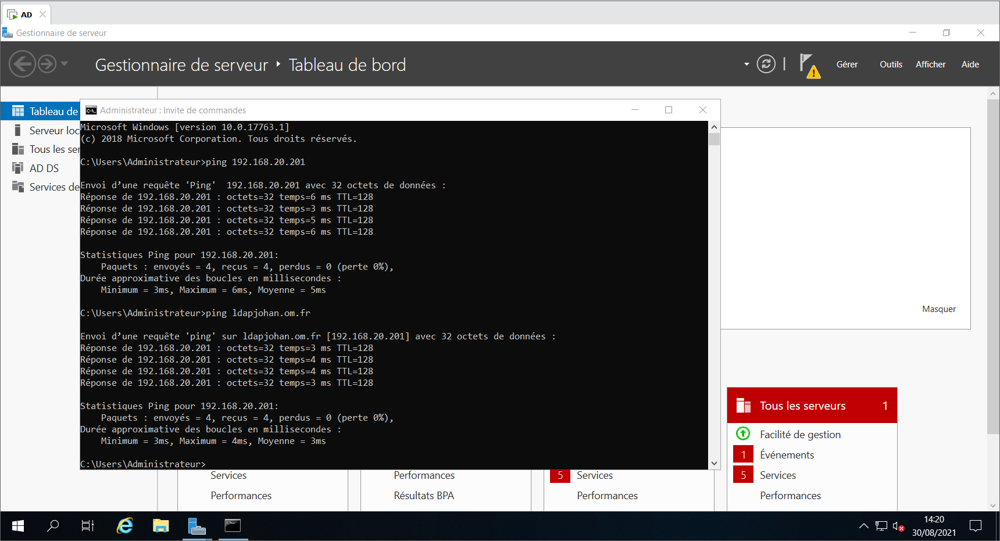 - 2√©me chose : ajouter le domaine (On arrive dans les “computers” sur le controleur principal)
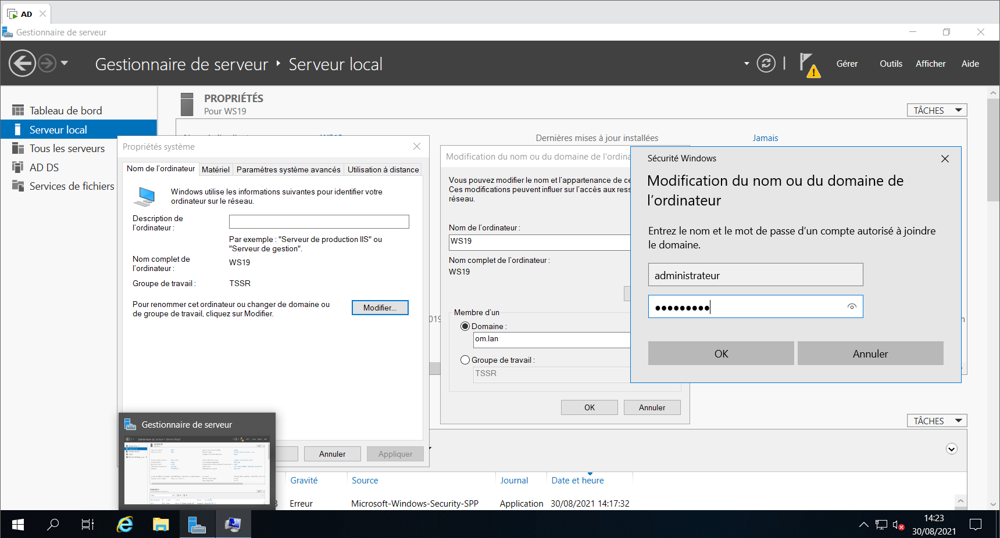 - Enfin se connecter en tant qu’administrateur du serveur (dans notre cas, login: OM\Administrateur)
- Désactiver le pare-feu qui vient se rajouter suite à la rentrée dans le domaine.
On clique sur le drapeau orange et on lance “promouvoir en controleur de domaine” :
- Ajout contrôleur de domaine au domaine existant
- Verifier qu’on est sur le bon domaine (om.lan)
- V√©rifier qu’on est bien sur le site de “Paris” et choisir le bon serveur √† r√©pliquer.
- Rentrer le mdp de restauration.
- Verifier que tout est au vert, puis lancer l’installation.
Une fois installé, voilà quelques checks et réglages à faire:
- Carte Réseau: Vérifier les paramêtres de carte. Mettre en DNS primaire nous (192.168.20.51) et en DNS secondaire celle du contrôleur principale (192.168.20.201).
- V√©rifier dans l’AD, que tout les domaines controlleurs secondaires sont bien pr√©sents.
- DNS: V√©rifier qu’on a bien r√©cuper√© om.lan, om.fr et la zone reverse. Supprimer les records inutiles.
- Créer un alias ldapjbf qui pointe sur notre serveur secondaire sur om.lan
- Créer un host A ldapjbf qui pointe sur notre serveur secondaire sur om.fr
- Allez dans Domaines et Approbation AD et v√©rifier qu’on a bien r√©cuper√© les suffixes de noms de domaine.
- Allez dans Sites et services AD Sites/Paris/Servers, on doit tous y être. Si on dévellope notre serveur, on doit avoir notre NTDS Settings et enfin à droite on retrouve nos partenaires de réplications.
Utilisateurs et ordinateurs AD :
- Builtin : on s’en sert assez peu au quotidien
- Computer : OU d’arriv√©e des PC et des servers dans l’AD
- Domain Controller : AD secondaire
- Users : Compte admin + autres comptes par d√©faut (structures d’OU/sous-OU)
- Administrateur du domaine = niveau le plus bas (acc√®s domaine pour l’usage quotidien)
- Administrateur du sch√©ma = possibilit√© de modifier le sch√©ma (op d’expertise et de migration)
- Administrateur de l’entreprise = total acc√®s √† toute la structure de l’AD
Comment se structure un AD
Une arborescence AD, ses OU et ses sous-OU, d√©pendent de l’entreprise dans laquelle on se trouve.
Un exemple d’organistaion (les bonnes pratiques) :
- Côté machine:
- Création OU Serveurs (donc tous serveurs qui arrive dans computers doit être déplacé dans cette OU)
- Création OU Machines
- Création sous-OU: Fixes
- Création sous-OU: Portables
- Création OU SallesInformatiques (y mettre les pcs de cette salle)
- Création OU BALS Générique pour ne pas mélanger les boites aux lettres avec les comptes génériques.
On peut décliner par types de machines, au niveau des utilisateurs.
Exemple:
| OU global | COMPTESOFFICE365 | GOUPES |
|---|---|---|
| sous-OU | Administratifs | Sécutité (on peut créer 2 sous OU ex: Appli / Data) |
| sous-OU | Enseignants | Liste de Diffusion |
| sous-OU | Vacataires | |
| sous-OU | Exterieurs |
Ne pas mettre d’espace ou de caract√®res sp√©ciaux dans les noms d’OU
ON VA MANIPULER
Créer une OU principale par personne pour éviter les conflits (Delegue).
| Créer des sous-OU: | |
|---|---|
| ComptesUtilisateurs / Groupes / Dans la sous-OU Groupes, créer deux sous-OU / Securite /ListesDiffusions | 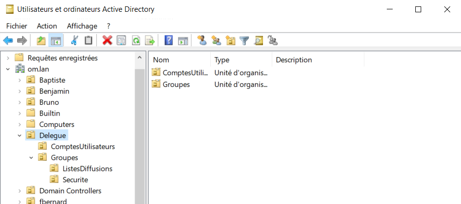 |
| Créer nos trois premiers utilisateurs. | |
|---|---|
| Mettre le nom en majuscule et le mettre avant le prénom |

|
Clique-droit Propri√©t√©s sur l’user :
- Mettre le plus de renseignement possibles pour avoir quelque chose de complet, fortement apprécié des users.
| Créer un groupe de sécurité | |
|---|---|
| Créer un groupe DSI et un groupe ServiceIT. Mettre ServiceIT dépendant du groupe DSI | 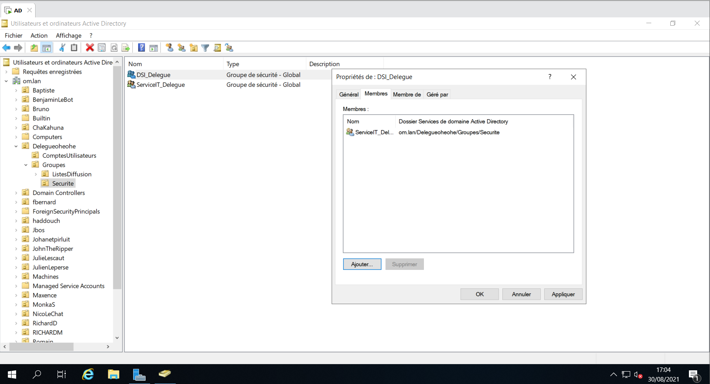 |
| Ajouter l’utilisateur dans le groupe ServiceIT |

|
AzureAD vas aspirer le compte d’Arthur PENDRAGON et le synchroniser avant sa boite mail
GPO ET TRANSFERTS DE FICHIER
Tout ce dont on parle n’est valable que si l’entreprise n’a pa Teams ou Sharepoint
PC Portables ou Fixes
- Besoins du personnel :
- Environnement de Bureau
- Données pures :
- Personnelles
- partagées ou communes ou collectives
- Images / Photos
- Favoris Internet (Edge) Tout doit être sur le réseau ! Rien en dur sur le disque du PC
Côté GPO :
- Attention : pour les entreprises passant par TEAMS ou SHAREPOINTS pas besoin de GPO car centralisé via les logiciels
- Attention : les données doivent être mises sur des serveurs de fichiers donc sur le reseau via GPO
- GPO = du bureau (va prendre le bureau local et le transposer sur le serveur de fichiers/réseau etc.)
- Nécessite gros serveurs de fichiers (baie de stockage) = disques VM pointés vers baie de stockage
- VM branch√©es sur baies en ESX (derri√®re le cluster ESX il n’y a que des baies de stockage) = baie connect√©e aux ESX
- Avenir = hyperconvergence (on s’affranchit des baies) = VMWare sait embarquer le stockage dans son noyau, stockage embarqu√© dans les clusters VSAN qui deviennent aussi baie (baie de stockahe imbriqu√©e √† VMWare, disques en full flash)
- Attention : les GPO ne proposent pas la redirection des ressources partagées
- (1) nécessite script powershell pour reconnecter le lecteur réseau (script de connexion dans une GPO)
- (2) vous connectez sur le compte de l’user directement le lecteur reseau des partages collectifs avec l’onglet …
Côté serveur de fichiers
Grosse b√™te pointe vers une baie de stockage. Elle proj√®te des volumes directement sur le serveur. Et le serveur dans l’explorateur Windows va pr√©senter la baie.
Sur le server de fichier: Arborescence dossiers
D: Dossiers Ultisateurs –> partag√© –> S√©curit√© NTFS
- Dossier individuel des utilisateurs –> Pas de partage –> S√©curit√© NTFS
- Le dossier pour qu’il redescende en GPO doit s’appeller avec le SAM (S. Acompte Mail.) –> %UserName%
- Partages –> partag√© –> S√©curit√© NTFS
Première GPO
Toujours faire ses GPO sur la dernières sous-OU.
Outilis / Gestion des stratégies de Groupes.
| Creer une GPO |
|---|

|
Clique-droit / Propri√©t√©s sur la GPO qui vient d’√™tre cr√©√©e.
| Script Powershell | |
|---|---|
| Mettre le script dans le dossier (en bas l’image), puis le charger dans le gestionnaire. | 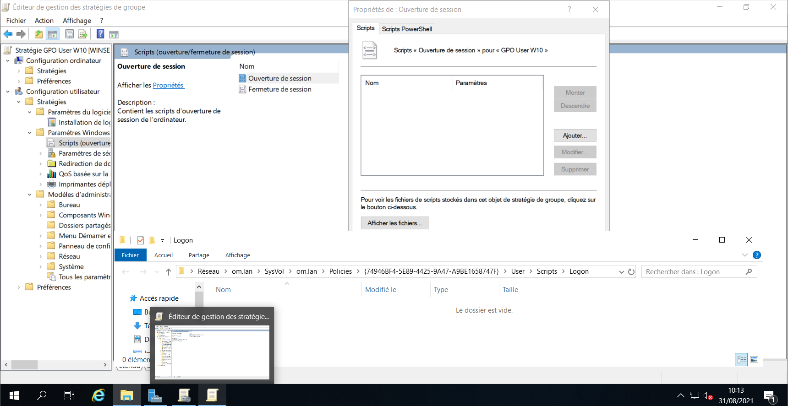 |
Création de notre arborescence de fichier sur le lecteur C:
-
C:\Partages\DSI\Service_IT
Sur le dossier parent DossiersUtilisateurs
Clique-droit sur le dossier Partages/Propri√©t√©s bouton “Partage avanc√©” pui cocher “Partager ce dossier”. Puis bouton “Authorisations” et Autoriser le contr√¥le total. Les vrais droits sont g√©r√©s par l’onglet “S√©curit√©”.
 Ne pas oublier l’autorisation partage sinon pas de partage
Ne pas oublier l’autorisation partage sinon pas de partage
Dans l’onglet “S√©curit√©”, donc, cliquez le bouton “Avanc√©” puis le bouton “D√©sactiver l’h√©ritage” et choisissez “Convertir […] sur cet objet” puis “Appliquer” et OK. Cliquez ensuite le bouton “Modifier” un peu plus haut et l√† d√©finissez les autorisations finement.
 À mettre partout pour éviter les problèmese :
À mettre partout pour éviter les problèmese :
- Système: Accès machine, INDISPENSABLE
- Admins du domaine (OM\Admins du domaine) : On fait ajouter, rechercher puis on trouve “admins du domaine” dans la liste (tous les utilisateurs et groupes sont list√©s ici).
- Utilisateurs Authentifiés (suivant le cas, peut être remplacé par un groupe ou un utilisateur spécifique).

- Ajouter/Avancé/Recherche/Utilisateurs authentifiés/OK
Sur le dossier enfant DSI

Ne pas laisser le CONTROLE TOTAL pour les utilisateurs car cela leur donne acc√®s √† l’onglet de s√©curit√© ce qui est une faille de s√©cuit√© √©norme.
Faire la même procédure pour le dossier enfant Service_IT
On vas s’occuper de l’arborescence des dossiers utisateurs :
- On crée le dossier à la racine du disque :
-
C:\DossiersUtilisateurs
-
- On applique le partage sur ce dossier (comme vu précedemment).
- Sécurité :
- On d√©sactive l’h√©ritage (comme vu pr√©c√©demment).
- On active la sécurité système, administrateur du domaine et utilisateurs authentifiés.
- Dans le dossier parent, on cr√©e un dossier enfant avec le SAM de l’utilisateur (apendragon).
- On g√®re la s√©curit√© (comme vu pr√©cedemment) mais on enl√®ve l’utilisateur authentifi√© et qu’on remplace par l’user, avec les r√™gles qui vont bien (tout sauf contr√¥le total)
Quotas
Sur C: Clique-droit/propri√©t√©s/onglet “Quota” :
- Afficher les paramètres de quota
- Cocher Activer la gestion
- Refuser de l’espace disque …
Si on ne rend pas l’utilisateur propri√©taire de son dossier, il n’aura pas son quota. Pour faire de l’individuel, il faut cliquer-droit sur l’user pour g√©rer son espace disque.

Clique-droit sur le dossier /Propri√©t√©s/S√©curit√©/Avanc√©/Modifier et choisir l’utilisateur.

Dossiers des utilisateurs
Ouvrir l’√©diteur de Gestion des strat√©gies de groupes Bureau :
- Clique-droit/propriétés/Cible
- Paramêtres: De base
- Rentrer le chemain d’acc√®s √† la racine \\WS19\DossiersUtilisateurs

- Clique-droit/propriétés/Paramètres
- D√©cocher Accorder √† l’utilisateus des droits exclusifs sur Bureau (sinon les admins ne peuvent plus y acc√®der pour r√©gler des probl√®mes)

Favoris :
- Clique-droit /propriétés/Cible
- Paramêtres: De base
- Rentrer le chemain d’acc√®s √† la racine \WS19\DossiersUtilisateurs
Documents :
- Clique-droit /propriétés/Cible
- Paramêtres: De base
- Rentrer le chemin d’acc√®s √† la racine \WS19\DossiersUtilisateurs
Images :
- Clique-droit /propriétés/Cible
- Paramêtres: Suivre les documents
Pour le partage colléctif :
- AD
- User / Compte Utilisateurs / Delegue / ComptesUtilisateurs
- clique-droit / Propri√©t√© / Profil / chemin d’acc√®s local
- Z:\\WS19\Partages\DSI

Vérification du bon fonctionnement des GPO :
- Monter un W10
- Cr√©er un user √† rattach√© au domaine (check dans computer dans l’AD pour l’arriv√©e)
- Mettre un fichier dans un des dossiers Documents/Images/…
- Check dans l’AD s’il apparait bien dans l’arborescence de l’AD par DossierUser

Ressources :
MIGRATION ACTIVE DIRECTORY 2016 vers 2019 (lvl ingénieur)
Migration de version d’AD / Passer de 2016 √† 2019
Ressources web :
- Docs microsoft : Installer, mettre à niveau ou migrer vers Windows Serveur
- System-net : Migration Windows Server 2019 : Les étapes
- How to: Migration to Windows Server 2019 / 2016, including applications, profiles, shares and data
- Migration d’une infra simple d’un serveur Active Directory 2012R2 vers 2016
Elements de compréhension et étapes à suivre
Attention : Nécessite de monter de niveau fonctionnel 2012 vers 2016 (niveau fonctionnel toujours au plus haut pour migration)
Migration simple

Existant
| DC Principal | DC secondaire |
|---|---|
| Rôle FSMO | - |
| AD WServer 2016 | AD WServer 2016 |
Préparation à la migration
Faire venir une forêt 2019 dans une forêt 2016 = trois étapes exclusives au prinicpal (puisque possède les FSMO) pour préparation :
- couper les réplications AD entre contollers (1 ligne de commande à passer)
- préparer la forêt (1 ligne de commande à passer)
- préparer le domaine (1 ligne de commande à passer)
Première étape de migration
- Pr√©paration d’un WServer 2019 : NIC, antivirus etc.
- Insérer le WServer 2019 en controller de domaine secondaire dans la forêt 2016
- Va se coller à la forêt 2016
- Mode dit “mixte” (possible de rester ainsi plusieus mois)
| DC Principal | DC secondaire | DC secondaire |
|---|---|---|
| Rôle FSMO | - | - |
| AD WServer 2016 | AD WServer 2016 | AD WServer 2019 |
Seconde étape de migration
- On migre les FSMO (les 5) doivent migrer vers DC secondaire 2019
- Via interface graphique
| DC secondaire | DC secondaire | DC principal |
|---|---|---|
| - | - | Rôle FSMO |
| AD WServer 2016 | AD WServer 2016 | AD WServer 2019 |
Troisième étape de migration
- Rétrogradation du second controller secondaires
- Plus DNS ni AD
- Redevient server simple
| DC secondaire | Server simple | DC principal |
|---|---|---|
| - | - | Rôle FSMO |
| AD WServer 2016 | AD WServer 2016 | AD WServer 2019 |
Quatrième étape de migration
- On crash/réinstalle le server simple en WServer2019
- On le fait venir en secondaire en 2019
| DC secondaire | DC secondaire | DC principal |
|---|---|---|
| - | - | Rôle FSMO |
| AD WServer 2016 | AD WServer 2019 | AD WServer 2019 |
- Bis repetita pour le premier controller
| DC secondaire | DC secondaire | DC principal |
|---|---|---|
| - | - | Rôle FSMO |
| AD WServer 2019 | AD WServer 2019 | AD WServer 2019 |
Migration de forêts
- Entreprise : acab.lan
- Achat ou fusion : nouveau nom, nécessite une nouvelle forêt (ex. anar.lan)
- Annunaire unique, identifiant unique à partir de plusieurs annuaires/identifiants
| Forêt 1 | Forêt 2 | > | Nouvelle forêt 1 | Nouvele forêt 2 |
|---|---|---|---|---|
| acab.lan | acab.lan | > | anar.lan | anar.lan |
| Controller 1 | Controller 2 | > | NvController 1 | NvController 2 |
- Temps long :
- Mise en place DNS (Zone de stub, redirecteurs conditionnels) + relations d’approbation bi-directionnelle entre les deux domaines/for√™ts = permet la communication entre les deux for√™ts
- Utilisation d’un server ADMT pour la migration les objets de la source vers la cible
- Installation de Password Export Server : utilitaire de migration des mots de passe
- Une fois cela effectué on peut commencer à migrer
- On ne supprime les deux controllers de base qu’une fois l’ensemble de la migration effectu√©e
Migration via Azure AD
- Azure AD se base sur l’AD local
- Azure récupère et transpose directement dans Office365

| DC Principal | DC secondaire | <- AZURE AD Source -> | Office 365 |
|---|---|---|---|
| Rôle FSMO | - | - | - |
| AD WServer 2016 | AD WServer 2016 | - | - |
| local 2019 | local 2019 | - | - |

- UPN : obligé de passer par ligne de commande
ON VA MANIPULER - MIGRATION WINDOWS SERVEUR 2016 A WINDOWS SERVEUR 2019
Sur Windows Serveur 2016
Ouvrir l’invite de commande dans la VM et se rendre √† la racine de C.
On coupe les réplications :
repadmin /options WS16 +disable_outbound_repl
Pour pr√©parer l’AD 2016 √† recevoir la f√¥ret de 2019.
On charge l’ISO de Windows Serveur 2019 dans le lecteur virtuel.
On se met dans le répertoire support puis adprep.
D:\support\aprep>
On tape la commande :
adprep /forestprep

Toujours dans D:\support\adprep> , on met à jour le domaine :
adprep /domainprep

Ajouter un contrôleur AD 2019 dans notre AD 2016
Maintenant, on peut ajouter un contrôleur AD 2019 dans notre AD 2016.
On réactive les répliques et on y touche plus. Pas besoin de les couper à nouveau, même si on reprends la migration des mois plus tard.
Retour dans C:
repadmin /options WS16 -

On monte un Windows Serveur 2019.
On d√©sactive le firewall et on met l’adresse du controlleur de domaine 2016 en DNS primaire.
On prends une petite sureté, on ping les machines entre elles.
Ensuite, il faut ajouter le Windows Serveur 2019 dans le domaine bobdy.lan

Se reconnecter dans le Windows Serveur 2019 en compte bobdy\administrateur.
Installer les rôle AD DS.
Promouvoir en Controlleur de Domaine.
Verifier qu’on soit bien dans le bon domaine.
On passe aux vérifications, pour être sûr que tout se soit bien passé :
- Dans l’AD19, Carte R√©seau : mettre l’AD 2019 en DNS primaire et l’AD 2016 en DNS Secondaire.
- Dans l’AD19, Gestionnaire DNS: Verifier qu’il y ai bien :
- les zones, les records et les zones inversées.

- les serveurs de noms

- les suffixes UPN

- les sites et services

- les réplications
- les OU et sous-OU
- Dans l’AD 2016, dans les param√™tres de carte r√©seau, mettre comme DNS secondaire l’AD 2019.
- les zones, les records et les zones inversées.
MIGRATION DES ROLES FSMO DE l’AD2016 √† L’AD2019
Le premier r√¥le a migrer est cach√©. Il faut donc le faire apparaitre via une petite commande. Ouvrir l’invite de commande et se renre √† la racine C:\
regsvr32 schmmgmt.dll
On vas lancer une console vierge :
| windows + R et mmc |
|---|

|
| Faire “Ajouter[…]enfichables” puis ajouter le Sch√©ma Active Directory |
|---|

|
| Clique-droit sur “Sch√©ma Active Directory”, Changer de contr√¥leur de domaine Active Directory |
|---|

|
| Clique-droit sur “Sch√©ma Active Directory”, Maitre d’Op√©rations | Cliquez sur Modifier |
|---|---|
| 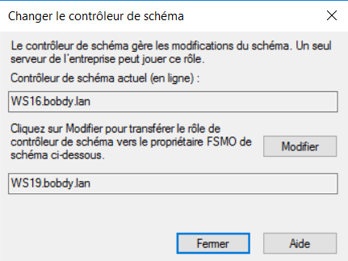 |

|
2ème ROLE
Dans Domaines et Approbations Active Directory Clique-droit, Changer de contr√¥leur de domaine Active Directory et promouvoir l’AD 2019 Clique droit, Maitre d’Op√©rations, Cliquez sur Modifier
3 DERNIERS ROLES
Dans Utilisateurs et ordinateurs Active Directory Clique-droit, Changer de contr√¥leur de domaine Active Directory et promouvoir l’AD 2019 Clique-droit sur notre nom de domaine, Maitre d’op√©rations:
- RID : Modifier, OUI, OK
- CDP: Modifier, OUI, Ok
- Infrastructure: Modifier, OUI, Ok

RETROGRADATION DE WINDOWS SERVEUR 2016
Gestionnaire de Serveurs, Gérer, Supprimer des rôles et des fonctionnalités. Il nous propose une méthode de rétrogradation à la décoche.
Décocher Service AD DS
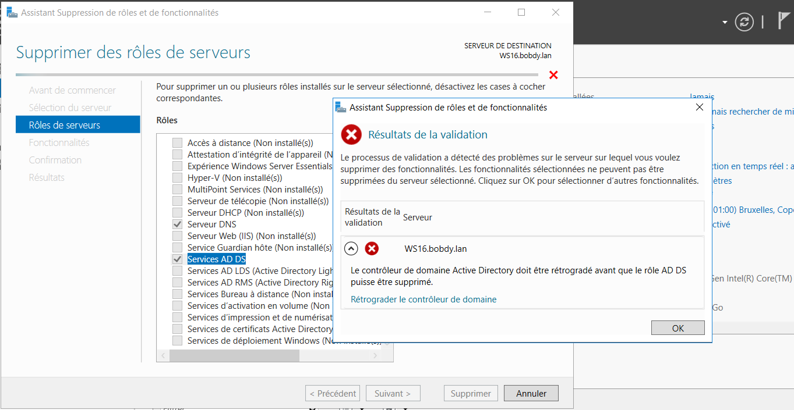
Cocher “Proc√©der √† la suppression”

Cliquez sur Retrograder
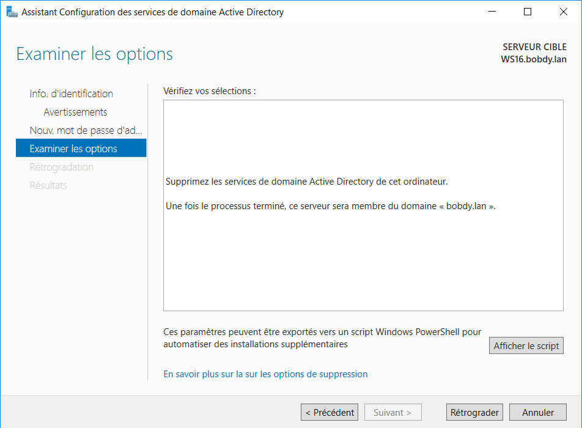
Enfin refaire supprimer les rôles et décocher les deux rôles et cette fois-ci il ne vas pas discuter.
On va dans les param√™tres de carte r√©seau et on retire l’adresse IP du DNS du Windows Serveur 2016.

QUELQUES NETOYAGES SUR LE NOUVEAU CONTROLLEUR PRINCIPALE WINDOWS 2019
Gestionnaire DNS
Clique-droit sur bobdy.lan et v√©rifier que dans les serveurs de noms, l’ancien serveur 2016 n’y soit plus et sinon supprimez le.
Idem dans bobdy.fr
Sites and Services Active Directory
Supprimez le serveur WS16.

Utilisateur et ordinateurs Active Directory
Supprimez le serveur des computers.
Gestionnaire DNS Supprime le record du Windows Serveur 2019
| Derni√®re op√©ration, dans Domaines et approbations Active Directory, clique-droit, augment√© le niveau fonctionnel de la for√™t. Sur une migration AD2016 √† AD2019, il n’y en a pas besoin. Par contre de AD2008 √† AD2012, deAD2012 √† AD2012R2 et AD2012R2 √† AD2016 il y a un niveau fonctionnel √† monter. |
|---|
ON VA MANIPER - MIGRATION INTER-FORET
Pour supprimer une OU : Affichage, fonctionnalit√©s avanc√©es, clique-droit sur propri√©t√©s l’OU d√©sir√©e, supprimer, onglet s√©curit√©, d√©coch√© la case.
Pr√©paration de la base pour l’AD19 source et cible :
- Désactiver les firewalls des 2 Windows Serveur.
- Sur la carte r√©seau du WS19CIBLE, on fixe l’IP: 192.168.20.53
- Renommerla machine en WS19CIBLE
- On installe les rôles Services AD DS et rôles DNS
- Promouvoir en contrôleur de domaine complétement indépendant : paradise.lan
- Faire les réglages de bases classiques
- Mettre la réplication à 15 minutes
- Créer son subnet dans Sites and Services AD
- Créer son domaine commercial dans les suffixes UPN en .fr
- On prépare les OU en prévision de la prochaine migration.
- Même si ca ne communique pas encore: Mettre sur les deux cartes réseaux, les deux DNS.
Contrôleur Source:
On va créer une zone de stub

|
La zone de stub va permettre de joindre la deuxième forêt. |

|
On ajoute notre domaine cible paradise.lan |

|
L’adresse IP de notre controlleur cible: 192.168.20.53 |
Vérifier que la zone est bien tombé dans les Zones de recherches directes.
Contrôleur Cible:
Dans le gestionnaire DNS, on va créer un redirecteur conditionnel.

|

|
Contrôleur Source:
On va faire communiquer les deux forêts et les deux domaines.
Domaines et approbations Active Directory
Clique-droit sur la propriété, puis Approbations


Si la zone d’approbation est pass√© c’est que la zone de stub et le redirecteur conditionnel sont bons.
On va vérifier côté Contrôleur Cible :
- L’approbation est faite dans l’autre sens.

- Sur le contrôleur cible, changer de domaine pour vérifier que les deux forêts communiquent.

|

|
GESTION DES DROITS
| Contrôleur Source | Contrôle Cible |
|---|---|

|

|
On vas permettre une délégation de contrôle sur le domaine cible, pour rajouter le compte administrateur du domaine source aux OU du domaine cible.

|

|
Pour afficher l’onglet s√©curit√©, il faut faire affichage, fonctionnalit√© avanc√©e.
On rajoute l’Administrateur en contr√¥le total du groupe s√©curit√©. Idem pour le groupe Staff.

On change de domaine, et on donne les mêmes droits aux administrateurs sur les OU du domaine source.

Controleur Source
Dans l’OU Builtin, il faut cr√©er un groupe avec le nom netbios du domaine source avec 3 fois $ : BOBDY$$$
Il sert à ADMT(logiciel qui permet la migration) de pouvoir migrer les objets.
Et il ne faut pas mettre de membre ! (very important)
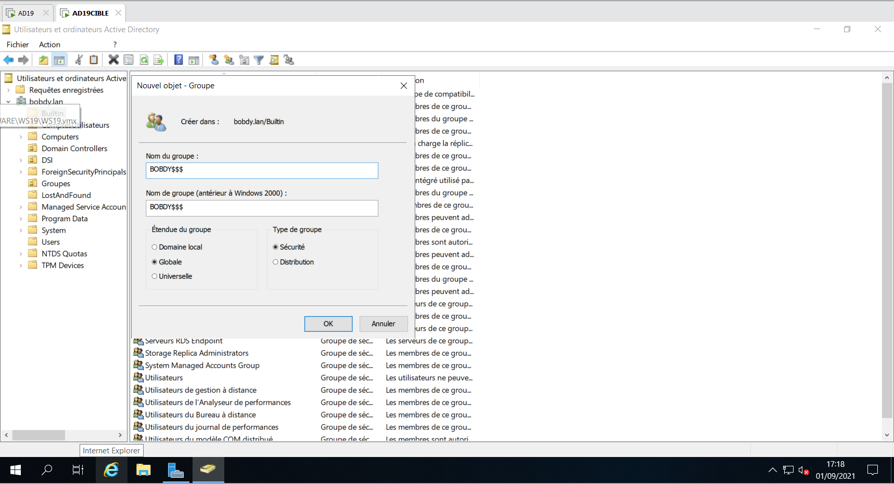
Ouvrir la base de registre (cr√©er la cl√© si elle n’existe pas)
-
Clé de registre :
[HKEY_LOCAL_MACHINE\SYSTEM\Current\ControlSet\Control\Lsa] “TcpipClientSupport”=dword:00000001
| 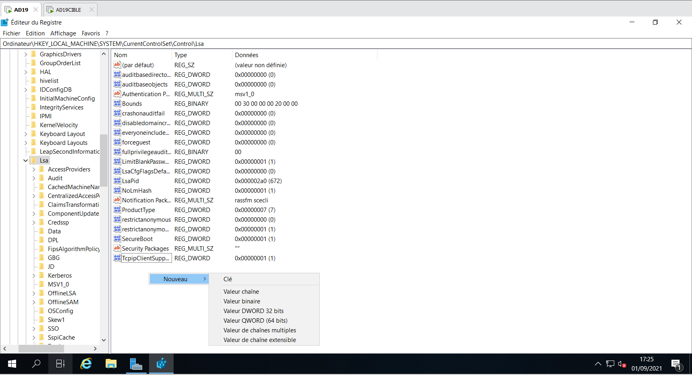 | 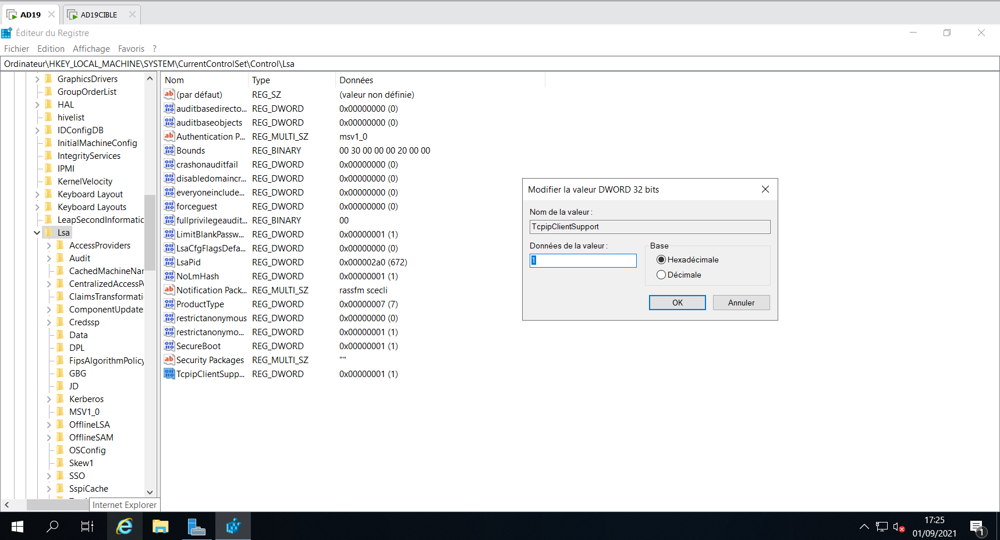 |
Contrôleur Source et Cible
Gestion de Stragtégie de groupe.
Il faut mettre une GPO en place, dans le domaine, Domain Controllers, Default Domain Controllers Policy
Clique-droit Modifier
Stratégie
Paramêtre windows
Paramêtre de sécurtié
Stratégie Local
Strat√©gie d’audit
Auditer la gestion des comptes.
Cocher les cases.

Ligne de Commande
Commande pour désactiver le SID filtering.
On commence par le contrôleur cible.
netdom trust (domaine cible) /domain:(domaine source) /quarantine:no /usero: (compte admin du controleur cible) /passwordo: (password du compte admin du controleur cible)
donc
netdom trust paradise.lan /domain:bobdy.lan /quarantine:no /usero:administrateur /passwordo:Dadfba16
Même commande pour le contrôleur source. (évidemment on adapte la commande.)
netdom trust bobdy.lan /domain:paradise.lan /quarantine:no /usero:administrateur /passwordo:Dadfba16
Commande pour activer le SID History :
On commence par le contrôleur source.
netdom trust (domain source) /domain:(domaine cible) /enablesidhistory:yes /usero:(compte source) /passwordo:(password source)
donc
netdom trust bobdy.lan /domain:paradise.lan /enablesidhistory:yes /usero:administrateur /passwordo:Dadfba16

Même commande pour le contrôleur cible. (évidemment on adapte la commande.)
netdom trust paradise.lan /domain:bobdy.lan /enablesidhistory:yes /usero:administrateur /passwordo:Dadfba16
ADMT
Cloner un windows serveur 2016 et l’appeller ADMT
Désactiver le pare-feu et régler la carte réseau. (192.168.20.54/24 et DNS : contrôleur cible)
On lui donne le nom ADMT et on le met dans le domaine cible (paradise.lan)
On redemarre.
Et on se log en nomdedomaine\administrateur (paradise\administrateur)
AMDT fonctionnant avec une BDD, il faut lui installer un SQL express.
Lien SQL Server Express
Lien ADMT
Lien PES
On installe SQL express. (Déclaré en instance et serveur ADMT)
On install ADMT (ADMT\ADMT)
Une fois ADMT installé on peut le lancer.

On va g√©n√©r√© sa cl√© de chiffrement pour la donner √† PASSWORD EXPORT SERVER. C’est pour que PES et ADMT puissent migrer
Invite de commande :
admt key /option:create /sourcedomain:(domainesource) /keyfile:(dans le répertoire que vous voulez)\admt_key /keypassword:(mdp que vous voulez)
admt key /option:create /sourcedomain:paradise.lan /keyfile:c:\admt_key /keypassword:Dadfba16
On install PES sur le contrôleur de domaine source.
R√©cuperer le fichier admt_key.pes cr√©e sur le contr√¥leur ADMT et le mettre dans le contr√¥leur source pour le charger lors de l’installation.
Prendre le compte BOBDY\administrateur (domainesource\administrateur) pour se log à PES (dans la bonne pratique, il faudrait créer un compte PES exprès)
Maintenant, il faut vérifier plusieurs points sur le contrôleur source :
-
Clé de registre :
[HKEY_LOCAL_MACHINE\SYSTEM\Current\ControlSet\Control\Lsa] “AllowPasswordExport”=dword:00000001
- Services.msc
- Il faut v√©rifier que le service de Password Export Serveur est bien en d√©marr√© en automatique et qu’il soit d√©marr√©.

Migration des utilisateurs
Vérifier que le service, PASSWORD EXPORT SERVICE, soit bien démarré.
Clique droit, assistant de migrations des comptes d’utilisateurs


Une fois les utilisateurs migrés, vérifier que les utilisateurs aient bien leurs nouveaux suffixes UPN.


Migration des groupes
C’est identique.


Ressources
AZURE AD CONNECT
Il s’installe sur une VM sur un AD local. Il faut le mettre sur un serveur d√©di√© et il ne fait que ca. Il ne s’occupe que de la synchro.
On crée un compte AD CONNECT, on le met administrateur général de MS365.
Commande POWERSHELL
Pour forcer la synchro :
Start-ADSyncSyncCycle -PolicyType Delta
Pour forcer le changement d’UPN :
set-MsolUserPrincipal -UserPrincipalName ancienUPN -NewUserPrincipalName nouveauUPN
set-MsolUserPrincipal -UserPrincipalName k.novoselic@cefim.eu -NewUserPrincipalName s.julie@cefim.eu